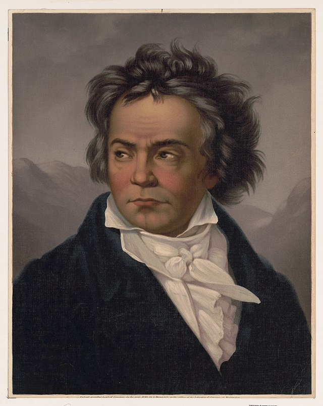
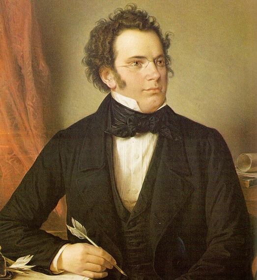

18-րդ դարի ցուցակի արտաքին կոմպոզիտորներ: Աշխարհի ամենահայտնի կոմպոզիտորները
Դասական երաժշտության առավելությունները, հավանաբար, հայտնի են քաղաքակիրթ հասարակության գրեթե յուրաքանչյուր բնակչի համար, գիտնականները վաղուց ապացուցվել են դրա դրական ազդեցությունը մարդու հոգեբանական վիճակի վրա:
Դասականը դասական է, այն մնում է հավերժ անմահ, յուրաքանչյուր նոր սերնդում կան իրենց նման ուղղության իրենց երկրպագուները, մինչդեռ դասական երաժշտությունը զարգանում է, միեւնույն ժամանակ զարգանում է:
Անցյալի եւ արդի կոմպոզիտորների տպավորիչ բազմազանության մեջ ես կցանկանայի հատկացնել նրանց առաջին տասնյակը, որոնց անուններն արդեն մտել են պատմություն, քանի որ նրանց հաջողվել է կազմել ամենաբարձր մակարդակի երաժշտությունը, ինչը զգալիորեն ընդլայնեց սահմանների սահմանները դասական հնչյունների, հասնելով գեղեցիկ նոր մակարդակի:
Այս անգամ մեր լավագույն տասնյակը չի պարունակում թվեր եւ պատվո տեղեր, քանի որ գնահատելու եւ համեմատելու ամենամեծ եւ, որ աշխարհի ամենահայտնի կոմպոզիտորները, իրականում, պետք է ծանոթ լինեն յուրաքանչյուր նվազագույն կրթվածին մարդ, ինչ-որ կերպ հիմար:
Եվ, հետեւաբար, մենք ներկայացնում ենք ձեր անունները, ինչպես նաեւ կենսագրությունից մի քանի հետաքրքիր փաստեր, առանց թվերի եւ համեմատությունների: Եթե դասական երաժշտության ակտիվ երկրպագու չեք, ապա լսեք, գոնե հանուն հետաքրքրության, այս մեծ կոմպոզիտորների մի քանի գործեր, եւ դուք կհասկանաք, որ ավելի քան տասնյակ սերունդներ ներշնչող երաժշտությունը չի կարող լինել սովորական կամ, ավելի վատ, ձանձրալի:
Լյուդվիգ վան Բեթհովեն / Լյուդվիգ վան Բեթհովեն (1770-1827)
Այսօր այն աշխարհում ամենահարգված, հանրաճանաչ եւ գործադիր կոմպոզիտորներից մեկն է, որ Բեթհովենը գրել է այդ ժամանակ հայտնի բոլոր երաժշտական ժանրերը, բայց համարվում է, որ նրա ստեղծագործությունների ամենակարեւորը, ենթադրյալ գործիքների եւ դաշնամուր, սիմֆոնիա, շրջանցումներ եւ սոնատա:
Փոքր Բեթհովենը մեծացել է երաժշտական ընտանիքում, եւ, հետեւաբար, ամենափոքր տարուց նա սկսեց մարզել խաղը, գծապատկերների, օրգանի, ֆլեյտայի եւ ջութակի վրա: Անցած մի քանի տարիներին Բեթհովենը կորցրեց լսումը, զարմանալիորեն, բայց դա չի խանգարում նրան գրել եզակի ստեղծագործությունների մի շարք շարք, որոնց թվում հայտնի իններորդ սիմֆոնիան:
Յոհան Սեբաստիան Բախ / Յոհան Սեբաստիան Բախ (1685-1750)
Հայտնի եւ սիրված աշխարհիկ գերմանացի կոմպոզիտորը, ով բարոկկո դարաշրջանի պայծառ ներկայացուցիչ է: Ընդհանուր առմամբ, դրանք գրվել են մոտ 1000 երաժշտական գործեր, որոնք ներկայացված էին այդ դարաշրջանի բոլոր նշանակալի ժանրերով, բացառությամբ օպերայի:
Հոհան Բախի ամենամոտ հարազատների եւ նախնիների թվում եղել են շատ պրոֆեսիոնալ երաժիշտներ, նա ինքն է դարձել ամենահայտնի դինաստենցներից մեկի փաստաբանը: Զարմանալի է, կյանքի ընթացքում Բախը հատուկ կոչեր չի ստացել, նրա աշխատանքների նկատմամբ հետաքրքրությունն աճել է իր մահից հետո մի ամբողջ դարից հետո:
Որոշ գիտակեր պնդում են, որ Բախի երաժշտությունը չափազանց զայրացած է եւ մութ, սակայն, իր աշխատանքի հետեւորդների կարծիքով, այն բավականին հիմնարար է եւ հիմնարար:
Wolfang Amadeus Mozart / Wolfgang Amadeus Mozart (1756-1791)
Ավստրիացի ամենամեծ կոմպոզիտորը, ով իրավամբ անվանել է իր գործի հանճար. Մոցարտը տիրապետում էր իրապես ֆենոմենալ լսողությանը, իմպրովիզացիայի, հիշողության, ինչպես նաեւ դրական դրսեւորում:
Ես կազմեցի ավելի քան 600 երաժշտական գործեր, որոնցից շատերը ճանաչվում են պալատի, համերգի, օպերայի եւ սիմֆոնիկ երաժշտության գագաթնակետին: Համարվում է, որ Մոցարտի երաժշտությունն ունի հատուկ բուժիչ ազդեցություն, խորհուրդ է տրվում լսել հղի եւ բուժքույր մայրեր:
Richard Wagner / Richard Wagner (1813-1883)
Ամենահայտնի գերմանացի կոմպոզիտորը, որը համարվում է ազդեցիկ օպերային ռեֆորմատոր, նա հսկայական ազդեցություն ունեցավ գերմանական եւ եվրոպական երաժշտական մշակույթի վրա, որպես ամբողջություն:
Wagner- ի օպերաները չեն դադարում ձգտել, զարմացնել, ոգեշնչել, ինչպես նաեւ ցնցել իրենց անհավատալի կշեռքը, որոնք տեղավորվում են հավերժական մարդկային արժեքների մեջ:
Peter Ilyich Chaikovsky (1840-1893)
Ով դեռ ծանոթ չէ հայտնի բալետի «Ընկույզ» «Ընկույզ»: Ապա դուք պետք է անեք դա: Peter Ilyich- ը բոլոր ժամանակների լավագույն ռուս կոմպոզիտորներից մեկն է, որը, իր երաժշտական գործերի շնորհիվ, կարողացավ անգնահատելի ներդրում ունենալ ամբողջ աշխարհի երաժշտական մշակույթի հասարակության մեջ:
Franz Schubert / Franz Peter Schubert (1797-1828)
Ավստրիացի մեկ այլ հայտնի կոմպոզիտոր, արժանի երաժշտական հանճար, ինչպես նաեւ իր ժամանակի լավագույն երգերի հեղինակ: Իր աշխատանքի ընթացքում Շուբերտին հաջողվել է գրել ավելի քան 600 կոմպոզիցիա, որոնք դրվել են ավելի քան 100 հայտնի բանաստեղծների համարների վրա:
Դժբախտաբար, Ֆրանցը շատ կարճ կյանք է ապրել, ընդամենը 31 տարեկան, ով գիտի, թե որքան ավելին է, քան կատարյալ եւ մեծը կարող է կառավարել այս փայլուն մարդուն: Փայլուն հեղինակի որոշ աշխատանքներ տպագրվել են միայն նրա մահից հետո, քանի որ Շուբերտը մնացել է բազմաթիվ եզակի ձեռագրեր, եզակի երաժշտական ստեղծագործություններով:
Franz Schubert / Franz Peter Schubert (1797-1828)
Rec անաչված «Վալզայի թագավորը», փայլուն ավստրիական կոմպոզիտոր, վիրտուոզ ջութակահար եւ դիրիժոր, ով իր ամբողջ կյանքը աշխատել է Օպերետայի եւ պարի երաժշտության ժանրում:
Դրանք գրվել են մոտ 500 վալվաս, կադրիիլ, բեւեռներ եւ պարային երաժշտության այլ տեսակներ, նրա շնորհիվ նրա շնորհիվ Վիեննայում 19-րդ դարում նրա ժողովրդականության գագաթին կբարձրանան: Այն փաստը, որ Յոհան Ստրաուսը ստիպված է ունենալ հայտնի ավստրիացի կոմպոզիտորի որդուն, որը նույնպես կոչվում էր Յոհան:
Frederick Chopin / Fryderyk Chopin (1810-1849)
Առանց չափազանցության, ասվում է, որ սա դասական երաժշտության բնագավառում ամենահայտնի բեւեռն է, որն իր գործով անխոնջորեն բարձր գնահատեց հայրենիքը, իր լանդշաֆտների գեղեցկությունը:
Եզակի այն փաստն է, որ Շոպինը այն եզակի կոմպոզիտորներից մեկն է, որը երաժշտությունը ստեղծեց բացառապես դաշնամուրի համար, իր գործերում դուք չեք հանդիպելու սիմֆոնիան եւ օպերան: Դա այս հնարամիտ կոմպոզիտորի գործերն են, որոնք հիմք են հանդիսանում շատ ժամանակակից դաշնակահարների ստեղծագործականության համար:
Gi ուզեպպե Ֆրանչեսկո Վերդի / Giuseppe Francesco Verdi (1813-1901)
Gi ուզեպպե Վերդին, առաջին հերթին, հայտնի է ամբողջ աշխարհով իր գործառնություններով, որի առանձնահատուկ տեղ է, դրամատիկ աշխատանքներ: Նրա «Ժառանգությունը», որպես մեծագույն կոմպոզիտոր, դժվար է գերագնահատել, քանի որ նրա երաժշտությունն ընդհանուր առմամբ մեծ ներդրում է ունեցել իտալական եւ համաշխարհային օպերայի զարգացման գործում:
Վերդիի գործերը համարվում են աներեւակայելի հուզական, այրվող, կրքոտ, հետաքրքիր, դրանք եռոտանում են եւ եռացրեք կյանքը: Եվ այսօր, չնայած իր օպերաների մեծամասնության մեկ տարի տարիքին, նրանք մնում են դասական երաժշտության սիրահարների ամենակայուն, հանրաճանաչ եւ հայտնի:
Hans Zimmer / Hans Zimmer (12 սեպտեմբերի, 1957)
Երբոդիայի հայտնի գերմանացի կոմպոզիտորը, որը լայնորեն տարածված էր համակարգչային խաղերի եւ հայտնի կինոնկարների համար գրված իր գործերի շնորհիվ: Իհարկե, արդիության կոմպոզիտորները դժվար է համեմատել անցյալի հանճարների հետ, որոնք ամրապնդեցին իրենց փառքը դարի ընթացքում, սակայն նրանք արժանի են մեր ուշադրությանը:
Երաժշտության Հանսը կարող է լիովին բազմազան լինել. Մրցույթ, հուզիչ, հուզիչ, դաժան եւ հուզիչ, նրա մեղեդիներից շատերը, հավանաբար, լսել են, բայց չգիտեիք, թե ով է նրանց հեղինակը: Այս հեղինակի ստեղծում Դուք կարող եք լսել նման ֆիլմերում եւ մուլտֆիլմերում, որպես «Կարիբյան թագավոր Լիոն», «Պիրլ-նավահանգիստ», «անձրեւային մարդ» եւ այլք:
Համաշխարհային դասական երաժշտությունը անհավանական է առանց ռուս կոմպոզիտորների աշխատանքի: Ռուսաստանը, տաղանդավոր մարդկանց եւ նրա մշակութային ժառանգությունը, միշտ եղել են աշխարհի առաջընթացի եւ արվեստի առաջատար լոկոմոտիվների շարքում, ներառյալ երաժշտությունը: Ռուս կոմպոզիտոր դպրոցը, որի ավանդույթների իրավահաջորդը սովետական եւ այսօրվա ռուսական դպրոցն էր, 19-րդ դարում սկսվեց կոմպոզիտորների հետ, ովքեր եվրոպական ժողովրդական երաժշտություն էին ներկայացնում Ռուսաստանի ժողովրդական մեղեդիներով:
Այս հայտնի մարդկանցից յուրաքանչյուրի մասին կարելի է շատ բան ասել, բոլորը պարզ չէ, եւ երբեմն ողբերգական ճակատագրերը, բայց այս վերանայման մեջ մենք փորձեցինք տալ միայն կոմպոզիտորների կյանքի եւ ստեղծագործականության համառոտ նկարագրություն: